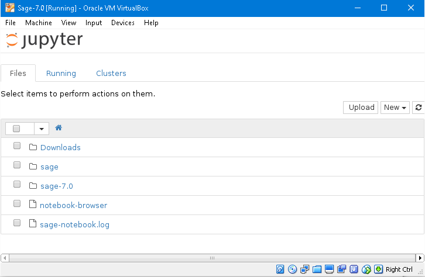
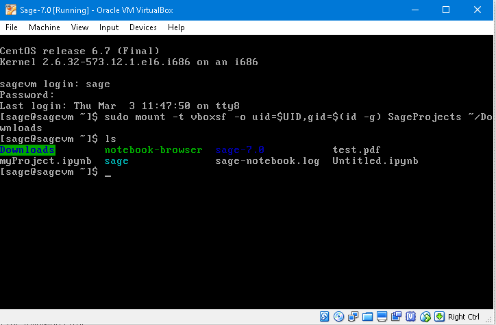
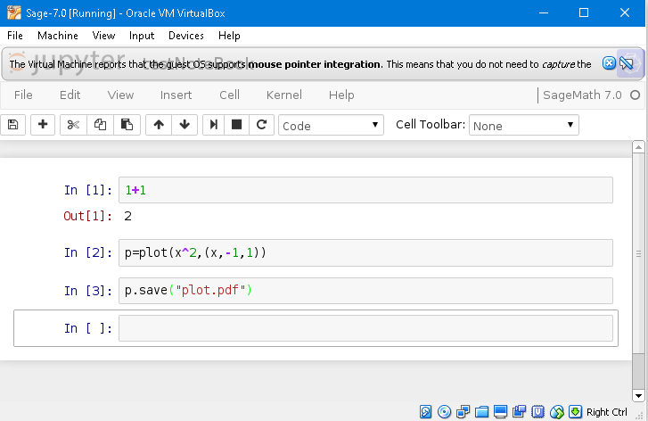
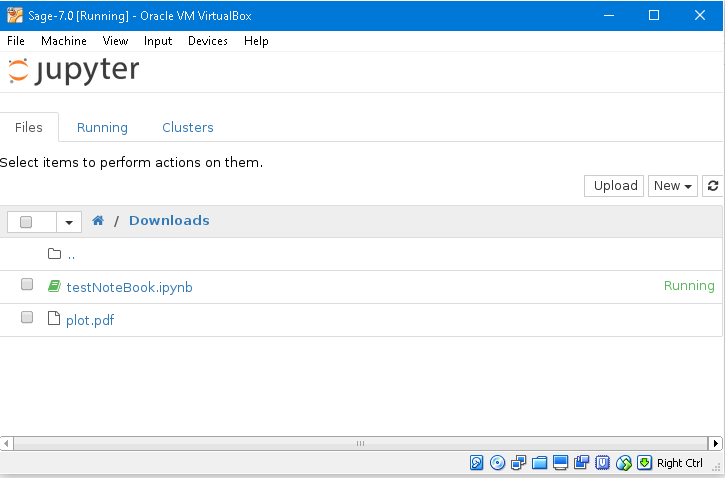
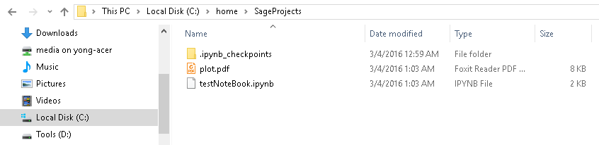

SageMath File Exchange with Windows via VirtualBox
SageMath Windows安装
在win环境下SageMath以ova虚拟机应用的形式安装: SageMath for Windows 在使用Virtual Box安装时将系统选择为自己比较熟悉的Ubuntu x64版本, 并按照 SageMath Installation 中的步骤添加好共享文件夹后reset状态 (比如 C:/home/SageProjects).
- 提示: 我们可以将和linux相关的所有文件都放在win下 C:/home 中, 并将此路径起名为“home”的环境变量.7.0版本默认进入 jupyter 界面,
iPython Notebook (Jupyter)
个人感觉ipython也比sage原生的notebook模式好用, 因为它支持 markdown+latex, 比sage的notebook界面更简洁, 并且它存储的文件位置在虚拟机上很直观, 很容易找到, 并不像之前那么隐蔽. 点击上方 jupyter 图标后, 显示所有文件夹和文件. 我们可以创建一个文件夹用于文件共享, 名字随意, 比如这里叫 Downloads:

路径配置
这时按右Ctrl+F1(默认``右Ctrl``为host鍵)进入shell, 用户名和密码都是sage, 将我们之前设定的文件夹C:/home/SageProjects添加进来, 使用以下命令(参考https://help.ubuntu.com/community/VirtualBox/SharedFolders):
sudo mount -t vboxsf -o uid=$UID,gid=$(id -g) SageProjects ~/Downloads
如下图:

设置完毕后按右Ctrl+F7(F2~F7之间的一个, 一般是F7)返回jupyter界面, 这时我们只要进入Downloads文件夹创建notebook,执行运算, 保存结果等操作. 所有产生的文件都会在这个文件夹下, 也会自动出现在win上的共享文件夹 C:/home/SageProjects 下面, 如创建sagemath7.0类型名为testNoteBook的文件, 我们在里面做了计算并使用了plot, 且使用save函数将plot结果输出为pdf:


这些文件同时也出现在了win系统的SageProjects共享文件夹中:

Duang~
这样就可以直接对sagemath虚拟机产生的文件进行操作了. 这种做法的一个小缺点就是每次开启虚拟机后都要右Ctrl+F1后用那串命令加载这个文件夹.
注释
Comments powered by Disqus